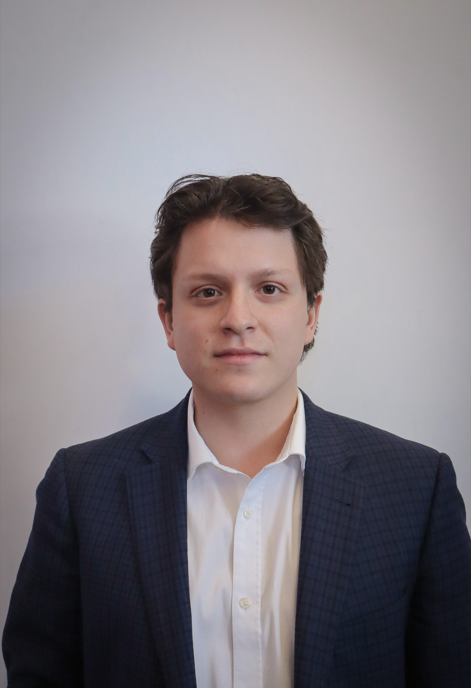

I research how people perceive, respond to, and relate to AI - and whether the design of these systems supports genuine human connection. My work draws on behavioral science to bridge the gap between what AI systems do and what those actions actually mean for real relationships.

I am a researcher at The Catholic University of America (CUA) in Washington, DC. My work sits at the intersection of psychology, AI, and mental health, translating behavioral science into ethical, human-centered technology solutions. My primary focus is ensuring AI systems are designed around human needs and mitigate potential harms rather than amplify them.
I collaborate with Dr. Brendan Rich at the Child Cognition, Affect, and Behavior Laboratory and Dr. Hanseok Ko at the Multimodal AI Laboratory, with research centered on applied AI safety questions.
I am leading a study examining how emerging adults perceive emotionally supportive messages when they they originate from AI versus human sources, comparing ratings of helpfulness, empathy, and felt connectedness across conditions. The study uses a within-subjects experimental design in which college students evaluate vignette responses generated by an LLM or written by human peers, alongside self-report measures of depression, social anxiety, resilience, and perceived social support.
I contribute to the design of an AI system for training future nurses and therapists, defining what the system should model (active listening, empathetic responding, appropriate pacing) and designing assessments that capture skill development. I will also review simulation-based learning literature to inform the design of an immersive VR training environment, accounting for psychological variables like cognitive load and emotional arousal.
I am helping conduct a multidisciplinary review of 96 design guidelines extracted from 18 foundational Human-Robot Interaction papers, evaluating each against two focal objectives: whether robot design actively fosters human-to-human connection, and whether it risks replacing or undermining existing relationships. The project develops a structured framework for categorizing and assessing design choices with the goal of producing actionable guidance for robotics researchers and developers building socially responsible robots.
Catholic University of America · Washington, DC
CUA · with Dr. Hanseok Ko
CUA · with Dr. Brendan Rich
CUA · with Dr. Chelsea Kelly
CUA · with Dr. Kathryn Degnan
I'm always happy to connect with researchers, collaborators, and anyone working on human-centered AI. Feel free to reach out.
SabaD@cua.edu